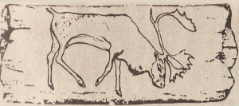
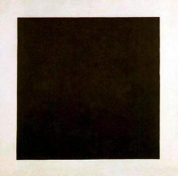
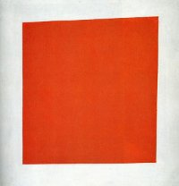
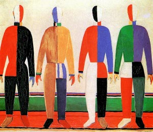
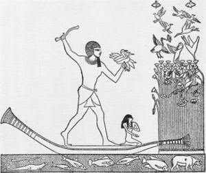
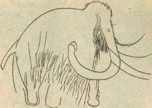
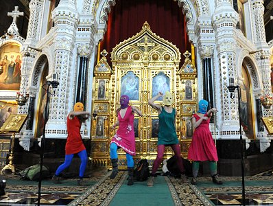

Не могу удержаться от старого анекдота перестроечных времён:
Мировоззрение советского человека Сталин определял как диалектический и исторический материализм. Это мировоззрение сохранялось и в горбачевскую эпоху. По этому поводу шутили: "Чем отличается диамат от мата? Мат все знают, но делают вид, что не знают. Диамат никто не знает, но все делают вид, что знают". Сейчас полунезнание диамата заменяют наспех приобретенным полузнанием Библии.
Но я всё же возвращаюсь к Библии:
|
Бытие 2
8 И насадил Господь Бог рай в Едеме на востоке, и поместил там человека, которого создал.
9 И произрастил Господь Бог из земли всякое дерево, приятное на вид и хорошее для пищи, и дерево жизни посреди рая, и дерево познания добра и зла.
|
|
В прошлое воскресенье я обещал прочитать небольшой рассказ-притчу:
|
Два ангела-путника остановились на ночлег в доме богатой семьи. Семья была негостеприимна и не захотела оставить ангелов в гостиной. Вместо того они были уложены на ночлег в холодном подвале. Когда они расстилали постель, старший ангел увидел дыру в стене и заделал её. Когда младший ангел увидел это, то спросил, для чего. Старший ответил:
— Вещи не такие, какими кажутся.
На следующую ночь они пришли на ночлег в дом очень бедного, но гостеприимного человека и его жены. Супруги разделили с ангелами немного еды, которая у них была, и сказали, чтобы ангелы спали в их постелях, где они могут хорошо выспаться. Утром после пробуждения ангелы нашли хозяина и его жену плачущими. Их единственная корова, молоко которой было единственным доходом семьи, лежала мёртвая в хлеве. Младший ангел спросил старшего:
— Как это могло случиться? Первый мужчина имел всё, а ты ему помог. Другая семья имела очень мало, но была готова поделиться всем, а ты позволил, чтобы у них умерла единственная корова. Почему?
— Вещи не такие, какими кажутся, — ответил старший ангел.
— Когда мы были в подвале, я понял, что в дыре в стене был клад с золотом. Его хозяин был груб и не хотел сделать добро. Я отремонтировал стену, чтобы клад не был найден. Когда на следующую ночь мы спали в постели, пришёл ангел смерти за женой хозяина. Я отдал ему корову.
Вещи не такие, какими кажутся.
|
Я начал с того, что заметил: Господь несколько раз во время творения говорил: "[это] хорошо", так он давал характеристику каждому этапу творения.
Как мы только что прочитали - все деревья в саду (в раю) были сотворены Господом (больше некому!), то там было и дерево познания добра и зла.
Я представляю это как бы заархивированное знание, лежит себе тихо-спокойно, никого не тревожит, вреда никакого, правда и пользы нет, ибо нет знания. Впрочем, сказано "всё хорошо", значит и зла нет.
Но вот досада:
|
Бытие 2
7 И создал Господь Бог человека из праха земного, и вдунул в лице его дыхание жизни, и стал человек душею живою.
8 И насадил Господь Бог рай в Едеме на востоке, и поместил там человека, которого создал.
|
Для чего: для возделования и ухода за садом и первое поручение человеку - произвести инвентаризацию.
При этом Бог предупредил человека:
|
Бытие 2
16 И заповедал Господь Бог человеку, говоря: от всякого дерева в саду ты будешь есть,
17 а от дерева познания добра и зла не ешь от него, ибо в день, в который ты вкусишь от него, смертью умрешь.
|
Изначально Бог предполагал во время инвентаризации найти человеку помощника, но подбного не нашлось и пришлось Богу расщепить человека и из его части создать помощника.
Мы это всё читали и знаем, что ничего хорошего это не принесло, потому что как раз через помощника змей внёс действие, которое привело к непослушанию. Впрочем, возможно предупреждение Бога , сделанное человеку, человек не донёс до женщины, своей предназначенной помощницы.
Архив был открыт и закон познания добра и зла начал действовать.
Надо быть честными, хотя бы перед собой: Бог по определению всевидящий и всемогущий, и из этого определения следует, что Бог насадил дерева в раю не для любования и не бесполезно, но для своего Плана, в который всё включено. И ничто без воли Бога не свершается - это-то мы знаем точно.
|
Мой экскурс-ссылка в Библию не только потому, что мы всё же находимся в церкви и где согласно сказанному в Новом Завете: где двое или трое собрались ради Меня, там Я среди них.
Иисус сейчас среди нас и мы попробуем разобраться с Его помощью в наших проблемах.
|
Недавно с Владиславом мы говорили об отличиях человека от животного, видимых отличиях и одно из главных это способность абстрагировать окружающую действительность, каким-то образом изображать её на картинах. Рисунки на стенах пещер, где жили некие существа, говорят о том, что это уже люди. Это было ещё до государств, некоторые предположительные датировки рисунков даются в пределах 1-2 млн. лет.
Рисунки Египта, Греции, Рима уже отражают идеологию тех времён и когда мы изучаем тот или иной народ то, изобразительное искуство обязательно для понимания жизни того времени, оно отражает настроение и действия тех времён.
Я опять возвращаюсь к определению добра и зла, как добро - это отсутствие зла и зло, как отсутствие добра, но присутствие того или другого определяется при наличии противоположного или отношения к противоположному, в случае отношений между людьми.
Грубо говоря, если нет человека, то нет и различия между добром и злом.
Библия утверждает, что если я сделал изображение, то это хорошо, пример: херувимы на ковчеге завета. Если я сделал изображение и ему начали поклоняться, то это грех перед Богом, идолопоклонство.

Если внимательно сопоставить развитие человека, его внутреннее развитие с изобразительным искуством, с художественным мастерством человека, то мы увидим явную корреляцию этих процессов: от наскальных рисунков до шедевров Рафаэля, Микельанжелло и подобных им.
Увы, в точном соответствии с Божьим законом диалектики, единства противоположностей, развивалась и другая ветвь, может быть с некотором запозданием по времени. и вершиной этого был черный квадрат Малевича и поклонение ему.

Чёрный супрематический квадрат — самая известная работа Казимира Малевича, созданная в 1915 году.
«Чёрный квадрат» входит в цикл супрематических работ Казимира Малевича, в которых художник исследовал базовые возможности цвета и композиции. Второй вариант картины «Чёрный квадрат» включён в триптих, в составе которого также присутствуют «Чёрный круг» и «Чёрный крест».
|

«Красный квадрат» — картина Казимира Малевича, написанная в 1915 году. Название на обороте «Женщина в двух измерениях». Представляет собой красный четырёхугольник на белом фоне, несколько отличающийся по форме от квадрата.
Экспонировался на выставке 1915 года. В каталоге выставки 1915 года он получил второе название — «Живописный реализм крестьянки в двух измерениях».
В настоящее время находится в Русском музее.
В 1920 году Малевич писал об этой картине, что «в общежитии он получил ещё значение» «как сигнал революции».
 Ещё одна картина Малевича приведена мною для показа прогресса художества Малнвича, этого кумира тогдашней элиты общества.
Ксана Бланк сравнивает супрематизм Малевича с творчеством Льва Толстого.
В частности, в рассказе Толстого «Записки сумасшедшего» описывается комната, где Фёдор начинает испытывать смертельную тоску:
«Чисто выбеленная квадратная комнатка. Как, я помню, мучительно мне было, что комнатка эта была именно квадратная. Окно было одно, с гардинкой — красной».
То есть, красный квадрат на белом фоне является, по сути, символом тоски. Сам Малевич пояснял концепцию своего первого «Чёрного квадрата», что «квадрат — чувство, белое пространство — пустота за этим чувством».
Ксана Бланк приходит к выводу, что, как и в рассказе Толстого, красный квадрат на белом фоне графически изображает страх смерти и пустоты. Однако данная трактовка Ксаны Бланк полностью противоречит названию картины.
 
Две картины разделены тысячалетиями между собой и с нами, но это картины несут смысл и содержание мне понятное.
|
Иоанна 8
31 Тогда сказал Иисус к уверовавшим в Него Иудеям: если пребудете в слове Моем, то вы истинно Мои ученики,
32 и познаете истину, и истина сделает вас свободными.
|
Время Малевича - это время первой мировой войны, время крушения европейской мечты о сладкой жизни и всеобщей свободе. К России это не относится, она всегда отставала от Запада даже в его заблуждениях.
Свободный художник выразил в картине свой внутренний мир, но там Бога не оказалось.
Стоимость картин Малевича и сегодня составляет миллионы долларов.
Из википедии:
"В 2002 г. по договорённости с правительством России «Чёрный квадрат» был снят с открытых торгов и за 1 миллион долларов был приобретён бизнесменом Владимиром Потаниным, с целью передачи его на постоянное хранение в Эрмитаж… «Чёрный квадрат» стал единицей измерения финансового успеха. "
Хранение предусматривает и экспозицию: "Идите, смотрите на символ бунта против Бога!"
Идут, смотрят и не видят.
Правители России протащили в народ лозунг: "Только эффективный собственник может спасти Россию!"
Быстро сообразили те, кто и раньше воровал и обманывал, что сейчас их триумф, сейчас их время: "Бери каждый сколько может!"
Народ поверил, числя себя православными христианами, но не читая и не изучая предупреждения Библии.
|
Михей 6:
9 Глас Господа взывает к городу, и мудрость благоговеет пред именем Твоим: слушайте жезл и Того, Кто поставил его.
10 Не находятся ли и теперь в доме нечестивого сокровища нечестия и уменьшенная мера, отвратительная?
11 Могу ли я быть чистым с весами неверными и с обманчивыми гирями в суме?
12 Так как богачи его исполнены неправды, и жители его говорят ложь, и язык их есть обман в устах их,
13 то и Я неисцельно поражу тебя опустошением за грехи твои.
14 Ты будешь есть, и не будешь сыт; пустота будет внутри тебя; будешь хранить, но не убережешь, а что сбережешь, то предам мечу.
|
Когда очнулись, то почти всё уже поделено или продано за гроши иноземцам.
Кто виноват?
Не посмотрели на себя, а возложили вину на тего, кого сами призвали на служение. Да и то, пребывая во лжи, кого из праведных могли призвать? Никого!
|
Матфея 6
24 Никто не может служить двум господам: ибо или одного будет ненавидеть, а другого любить; или одному станет усердствовать, а о другом нерадеть. Не можете служить Богу и маммоне.
|
| Ложь становится на место правды и тёмное выдаётся за свет.
|
1-e Петра 2
13 Итак будьте покорны всякому человеческому начальству, для Господа: царю ли, как верховной власти,
14 правителям ли, как от него посылаемым для наказания преступников и для поощрения делающих добро, --
15 ибо такова есть воля Божия, чтобы мы, делая добро, заграждали уста невежеству безумных людей, --
16 как свободные, не как употребляющие свободу для прикрытия зла, но как рабы Божии.
|
Сатана сел на престол и закон его известен: разделяй и властвуй, сей ненависть и вражду между всеми, не делая различий.
Так и получается, что один вор тащит на суд другого вора и садит того в тюрьму.
Социальное давление стравливает на эпизодах незначительных, придавая им дутую величину и значение.

Рядовое хулиганство девиц сомнительной репутации в Храме Христа Спасителя раздули до вселенских масштабов и заставили народ России и многих за рубежом поглощать эту жвачку СМИ.
Реальные проблемы уведены в тень, правда заменена правдоподобием, театр - балаганом, любовь - животной случкой, "справедливость" стала беззаконием.
Медленно но верно вокруг девиц образуется ореол мучениц за правду, борцов с тиранией власти, а заодно и религиозных страдальцев. Вспоминают инквизицию и льют слёзу о бедных детях этих "девушек".
Ретушируются фотографии и правятся речи, почти философские и святые. Убираются старые компроментирующие съёмки, или, если это невозможно, то ссылки на них. Интернет-пространство подчищается для места новых "святых".
Нам предлагают очередной чёрный квадрат"!
А что же церковь?
Увы, православие фактически в расколе, в соблазне золота и власти.
Как тут не вспомнить:
|
1-е Коринфянам 10
21 Не можете пить чашу Господню и чашу бесовскую; не можете быть участниками в трапезе Господней и в трапезе бесовской.
22 Неужели мы [решимся] раздражать Господа? Разве мы сильнее Его?
23 Все мне позволительно, но не все полезно; все мне позволительно, но не все назидает.
24 Никто не ищи своего, но каждый [пользы] другого.
|
Сужу ли я этим, или осуждаю?
Имею ли я на это право, если даже Апостол восклицает:
|
Римлянам 7
15 Ибо не понимаю, что делаю: потому что не то делаю, что хочу, а что ненавижу, то делаю.
16 Если же делаю то, чего не хочу, то соглашаюсь с законом, что он добр,
17 а потому уже не я делаю то, но живущий во мне грех.
18 Ибо знаю, что не живет во мне, то есть в плоти моей, доброе; потому что желание добра есть во мне, но чтобы сделать оное, того не нахожу.
19 Доброго, которого хочу, не делаю, а злое, которого не хочу, делаю.
20 Если же делаю то, чего не хочу, уже не я делаю то, но живущий во мне грех.
21 Итак я нахожу закон, что, когда хочу делать доброе, прилежит мне злое.
22 Ибо по внутреннему человеку нахожу удовольствие в законе Божием;
23 но в членах моих вижу иной закон, противоборствующий закону ума моего и делающий меня пленником закона греховного, находящегося в членах моих.
|
Наше время характеризуют, как время великих перемен, я говорю о годах после пресловутого 2000-летия, когда многие ждали информационного коллапса и чуть-ли ни конца света.
Однако, ничего этого не произошло и мир тихо вполз в эпоху тягучего финансового кризиса.
Распад Советского Союза несколько замедлил процесс распада Западного Мира и медленное сползание в финансовую и технологическую яму было воспринято, как движение к изменению мира в лучшую сторону.
Индивидуализм стал знаменем эпохи и права личности провозглашены главными, но это происходило на фоне возрастания контроля государства над "свободной" личностью.
Второй по важности процесс - это создание единого государства по всей Земле.
Как тут не вспомнить Откровение Иоанна, описывающее апокалипсис во всех его подробностях.
Для чего Богу предупреждать человечество о его катастрофе?
Впрочем, этому предупреждению скоро будет 2000 лет и оно пока не реализовано, хотя люди каждой эпохи примеривали его "на себя".
Примеривали и менялись, также как город в который с подобным предупреждением пришёл Иона. Господь пощадил город, возможно так же он пощадит и нас. Есть ли основания у нас для такой надежды?
Да, есть и достаточно вспомнить недавнее наше прошлое с нарастающей угрозой ядерной войны. Бряцанье атомной бомбой вызвало у народов чувство пробуждения и осознания грядущей, уже совсем близкой катастрофы.
Правители вынуждены были начать движение разоружения, вернее ядерное ограничение и повсеместная инспекция.
Сегодня новая угроза, но уже на более худшем фоне морального падения массы людей.
Это происходит незаметно но каждый день: личное благополучие поставлено как первостепенное и наиважнейшее.
Мне говорят: ты свободен в своём выборе, так выбери лучшее ...
Почти по Библии, но вместо многоточия вам предлагают новую марку машины, или новый дом, или на случай бедности - новый рюкзак.
|
Галатам 5
13 К свободе призваны вы, братия, только бы свобода ваша не была поводом к [угождению] плоти, но любовью служите друг другу.
14 Ибо весь закон в одном слове заключается: люби ближнего твоего, как самого себя.
15 Если же друг друга угрызаете и съедаете, берегитесь, чтобы вы не были истреблены друг другом.
16 Я говорю: поступайте по духу, и вы не будете исполнять вожделений плоти,
17 ибо плоть желает противного духу, а дух--противного плоти: они друг другу противятся, так что вы не то делаете, что хотели бы.
18 Если же вы духом водитесь, то вы не под законом.
19 Дела плоти известны; они суть: прелюбодеяние, блуд, нечистота, непотребство,
20 идолослужение, волшебство, вражда, ссоры, зависть, гнев, распри, разногласия, (соблазны), ереси,
21 ненависть, убийства, пьянство, бесчинство и тому подобное. Предваряю вас, как и прежде предварял, что поступающие так Царствия Божия не наследуют.
22 Плод же духа: любовь, радость, мир, долготерпение, благость, милосердие, вера,
23 кротость, воздержание. На таковых нет закона.
24 Но те, которые Христовы, распяли плоть со страстями и похотями.
25 Если мы живем духом, то по духу и поступать должны.
|
|
|
19 августа 2012г.
Николай Потапов
|